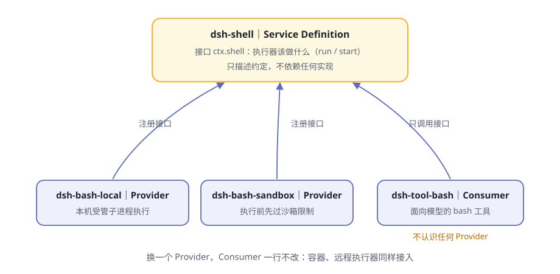
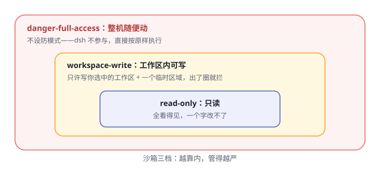

第9章 安全的手脚¶
你让 agent "清理一下构建缓存"，它痛快地写出一条删除目录的命令。
你盯着这条命令看了三秒：路径写对了还好，万一错一个字符，删掉工作区之外的东西怎么办？手是最危险的器官——能改文件的那一刻，它就有了闯祸的能力。问题从来不是"要不要给手"，而是"怎么给它画圈"。
阅读提示 这一章看 dsh 给手脚立的规矩：四只手各是谁、能力接口的三种角色、沙箱三档、每台电脑不同的锁、"先选地盘"的设计哲学，以及审批和"模型反问"怎么收尾。
四只手¶
先认全 dsh 的四只手（表9-1）：
表9-1 四只手
| 零件 | 干什么 | 一个安全细节 |
|---|---|---|
| fs | 读、写、编辑文件，glob/grep 检索 | 文件读写不设超时——截止时限只会杀掉操作系统仍会完成的工作 |
| shell + subprocess | 执行命令、管理后台进程 | 每次调用都是全新的 bash -c，不保留任何 shell 状态 |
| terminal | 持久终端会话（伪终端） | 每项操作都要求"恰好是发起它的那个 agent"，别的 agent 碰不了 |
| code-runtime | 跑模型写的小程序，捕获它打印和返回的内容 | 运行时可替换，消费方不动 |
每一只手都受两套规矩管：审批（第 6 章的关卡①）管"干之前问不问你"，本章的沙箱管"就算许了干，能碰到多大范围"。双保险。
还有个共同的底座细节：命令执行前，环境先"洗澡"。子进程基底 会把形似凭据的环境变量（名字含 KEY、PASSWORD、SECRET、TOKEN 的）一律抹掉，再交给命令——密钥不能顺着环境漏进 shell。
能力的接口：capability seam 的三角色¶
dsh 把每一项可替换的能力都拆成三种角色，官方叫它 seam（接缝）。第 3 章提过"只认接口、不认实现"，这里看它的标准件——用 shell 组当样板（表9-2）：
表9-2 shell 组的三个角色
| 角色 | 包 | 干什么 |
|---|---|---|
| Service Definition | dsh-shell |
定义"执行器该做什么"：前台跑命令、后台起进程；不规定怎么做 |
| Service Provider（本地） | dsh-bash-local |
在本机起受管子进程执行 |
| Service Provider（沙箱） | dsh-bash-sandbox |
沿用本地机制，但每次执行前先过沙箱限制 |
| Consumer | dsh-tool-bash |
面向模型的 bash 工具，只认接口，不认识任何提供方 |

图9-2 用 shell 组看 seam 三角色
三角色的纪律：
- 定义不依赖实现。
dsh-shell只描述词汇和约定，绝不 import 任何后端； - 消费方不认识提供方。
dsh-tool-bash只调用接口ctx.shell；它探测到执行器声明了"我走沙箱"这项能力时，才向模型公布升权字段——工具不关心笼子是本地沙箱还是别的什么； - 加一种实现，就是多一个提供方。 架构文档的原话是：添加一项能力，意味着把三个角色一并设计。
拆分的红利在哪？换一个提供方，消费方一行不改。想给所有命令上沙箱？把组合里的 dsh-bash-local 换成 dsh-bash-sandbox 就行——模型用的还是同一个 bash 工具，连工具说明都会自动带上沙箱升权的指引。
沙箱三档¶
沙箱管的是文件系统上的手脚范围，词汇只有三个词（图9-1）：

图9-1 沙箱三档，越靠内越严
表9-3 三档对照
| 档位 | 能干什么 | 备注 |
|---|---|---|
read-only |
全看得见，一个字改不了 | 默认档；/dev 里只放行 /dev/null，所以 >/dev/null 还能用 |
workspace-write |
只能写工作区 + 一个平台临时区域 | 出了圈就拦 |
danger-full-access |
不设防 | 这档从不咨询沙箱提供方，命令按原样执行 |
三个词要读准：
- 默认是只读。 部署不填，就是
read-only——故障安全的方向是"更严"，不是"更松"。 - 第三档不是"更宽的沙箱"，而是"没有沙箱"。 名字以
danger-开头，本身就是警告。 - 词汇只覆盖文件操作。 网络不在其中，进程可见性也不承诺——别指望这套词汇拦网络请求，那需要别的机制（见文末思考题）。
每台电脑，锁法不同¶
同一个"三档"概念，落到不同操作系统，用的是各家自己的锁（表9-4）：
表9-4 四种平台的沙箱实现
| 平台 | 用的锁 | 怎么锁 |
|---|---|---|
| Linux（首选） | bwrap | 只读挂载宿主根目录、全新 /dev、私有 PID 命名空间；写档另加临时 /tmp 和工作区绑定挂载 |
| Linux（备选） | Landlock | 用自带的 landlock-run 启动器，下一节细讲 |
| macOS | Seatbelt | 默认放行、写操作白名单；只读档只放行 /dev/null，写档加工作区、/tmp 和每用户临时区 |
| Windows | ACL 受限令牌 | 每个工作区一个写入标识；会话私有临时目录另发一套可撤销的授权 |
两条铁律贯穿所有平台（由 本地后端 执行）：
失败关闭。 探测不到任何可用后端时，命令拒绝执行，错误信息直接告诉你该修什么——装 bubblewrap、换支持 Landlock 的内核、修 sandbox-exec，或者干脆显式改用 danger-full-access。绝不静默地"那就别关笼子了"。
诚实报告。 每个后端要自报设防的完整度，只有两种答案：full（承诺的每一条都管住了）或 partial（只管住一部分）。比如 Windows 的受限令牌为了完成进程初始化必须保留 Everyone 权限，外部授予 Everyone 写的对象仍可写，NTFS 硬链接还能让工作区内外指向同一个文件对象——dsh 不假装完美，如实报告 partial。需要绝对边界的场景，看到这个标记就该换更重的隔离，而不是被"已沙箱"三个字安慰。
landlock-run：先限制自己，再执行¶
Linux 备选档用的启动器值得单独看一眼。它放在仓库的 native/ 目录——dsh 仅有的平台原生组件。
landlock-run 是一个"先限制自身、再执行"的小程序：约 300 行 C11，静态链接，直接对着内核接口写。工作方式三个关键词（表9-5）：
表9-5 landlock-run 的三个关键词
| 关键词 | 含义 |
|---|---|
| 先限制，后执行 | 先给自己装上文件系统允许清单（哪些路径只读、哪些可读写），再执行被包装的命令 |
| 规则继承 | 规则集跨执行继承——命令及其派生的每一个进程都在限制下运行 |
| 失败关闭 | 内核管不住，就不运行命令直接退出 |
妙处还有一句：笼子只关命令，不关狱卒——发起调用的 dsh 自己不受限制。
它的边界也很诚实：要求内核 5.13 以上，内核能力的新旧决定自报 full 还是 partial；探测还有第三档 unusable。二进制按架构预发布（x64/arm64），装不上就是装不上，不提供现场编译的侥幸。
它还定了一条诊断约定：退出码 125 加一行特定致命诊断，才归因为"启动器自己坏了"；否则一律按命令自己的结果处理。沙箱的问题和命令的问题，必须分得清。
先选地盘：边界跟着调用走¶
还记得第 2 章的"先选车库"吗？不选工作区，输入框就是灰的。那不是界面矫情，是本章这套规矩的地基。
dsh 给沙箱政策设了唯一的归属位置（sandbox-policy），设计分三层（表9-6）：
表9-6 先选地盘，三条设计
| 设计 | 含义 |
|---|---|
| 地盘一次选定 | 会话创建时记下的工作区根目录不可变；这个会话每次调用的可写范围都以它为锚 |
| 换档必留痕 | 运行时切换档位 = 往会话日志追加一条事件；重启后回放，档位原样恢复；两个会话各记各的账 |
| 边界跟着调用走 | 每次调用单独解析一张完整边界条：显式批准 > 会话最后一次切换 > 部署默认 |
第三条最要紧。同一时刻，不同会话可以跑在不同档位上；一次被拒后的"批准重试"，也只是换一张更宽的边界条重新调用——已批准的升权不改变任何进程状态，只改变这一次调用的政策。
模型也不被蒙在鼓里：每次请求前，当前政策（什么档、工作区在哪）会作为上下文告诉它。它拿到的是"此刻的规矩"，而不是一份能力清单让它自己琢磨。
审批预设与"模型反问"¶
手脚的最后一道规矩在人这边（表9-7）：
表9-7 人机协作三件
| 零件 | 干什么 |
|---|---|
| 权限预设 | 把"沙箱档位"和"审批策略"打包成一组，界面上是一个选择器 |
| 审批 | 一次性授权：批一次，只管这一次 |
| 模型反问 | 模型缺信息时，带着选项来问你 |
权限预设出厂两组：workspace-write 配"要审批"，danger-full-access 配"从不审批"——档位和问不问捆在一起选，省得配出自相矛盾的组合。预设在会话创建时固定：之后你再改默认值，也影响不到已经开着的会话。
审批的词汇只有两个词：ask 或 never。批就是一次——没有"永远允许"，没有记住规则；never 档下需要审批的操作直接拒绝。而最重要的保守纪律第 6 章讲过了：没人能回答时，按拒绝处理。
模型反问（ask_user_question 工具）是这套规矩的柔性一面：模型拿不准时，可以带着问题和选项来问——每个选项带说明，推荐项标注后放第一位，还能多选。你答完，答案原样回到循环。注意边界：被委派出去干活的子代理不能代主人向你提问——问题必须由和你直接对话的那个 agent 发出。
更大的笼子：把整只手伸到别处¶
沙箱接口有个明确的边界声明：只管与宿主共享文件系统和内核的子进程。想要更强的隔离——容器、微型虚拟机、远程执行——怎么办？
官方的回答很 dsh：它们不是这个接口的另一个后端，而是整组替换（表9-8）。
表9-8 两种隔离路径
| 路径 | 做法 | 隔离到什么程度 |
|---|---|---|
| 沙箱后端 | 在现有接口内选一个平台锁 | 子进程与宿主共享内核和文件系统，只圈住文件操作 |
| 整组替换 | 把命令执行与文件系统两个能力的提供方，换成同一套指向远端的实现 | 整个执行世界搬到别处 |
妙处在"执行世界"这个词：文件系统和进程提供方共享同一个执行世界。把这个世界的坐标指向远端，bash、终端、语言服务会一起搬过去，不用为每只手单独改造。第 4 章"只认接口、不认实现"的红利，在这里兑现了。
🧪 本章实验¶
实验 9-1 ★｜撞一次墙 目标：亲眼看到沙箱拦截。 步骤：工作区外放一个空文件夹，让 agent 往里面写个文件（挑无害的内容）。 验收：写入被拦下，工具结果里出现"当前模式下文件访问被拒"一类的标记，或先弹出审批；agent 会解释原因，而不是硬闯。
实验 9-2 ★★｜查你的档位 目标：弄清当前会话跑在哪一档。 步骤：直接问 agent"你现在的文件政策是什么、工作区根在哪"，或查权限设置。 验收：它能说出当前档位（默认
read-only）和工作区根路径——这些是每次请求前就摆在它桌上的上下文。实验 9-3 ★★｜让模型反问你 目标：触发一次
ask_user_question。 步骤：给一个故意二选一的任务（比如"用方案 A 或 B 整理这个目录"，不说明选哪个）。 验收：弹出带选项的提问；你选择后，它按所选执行。
🤔 思考题¶
- ★ 为什么"danger-full-access 从不咨询沙箱提供方"比"把沙箱放宽到最大"是更诚实的设计？
- ★ 沙箱后端自报
partial而不假装full——这对用户的信任意味着什么？ - ★★ 沙箱词汇只管文件操作。真要拦网络请求，你会把它加在哪一层？（提示：想想 seam 的三角色）
- ★★ 为什么"已批准的升权"要做成"拿更宽的边界条重新调用一次"，而不是给当前进程松绑？
- ★★★ 把执行世界指向远程沙箱，"手"就安全了吗？还有什么会跟着过去？
📝 小结¶
- 四只手——fs、shell/subprocess、terminal、code-runtime；环境先洗澡，凭据不下传
- capability seam 三角色——定义立约、提供方实现、消费方只认接口；shell 组是样板，换提供方不动消费方
- 三档——read-only（默认）/ workspace-write / danger-full-access；第三档 = 没有沙箱；词汇只管文件
- 每台电脑一把锁——Linux bwrap/Landlock、macOS Seatbelt、Windows 受限令牌；失败关闭，诚实自报 full/partial
- landlock-run——先限制自己再执行，规则跨执行继承；笼子只关命令，不关狱卒
- 先选地盘——工作区根不可变；换档必留痕；边界跟着调用走，不跟着进程走
- 人这边——预设捆住档位与审批；授权只有一次；没人回答 = 拒绝；模型可以带着选项反问
下一章，看 agent 怎么把手伸出电脑，连接外部世界。➡️ 第10章 连接外部世界